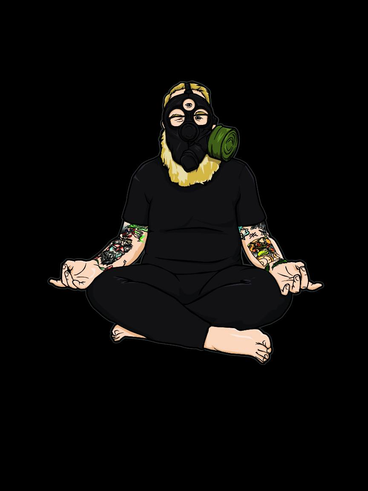
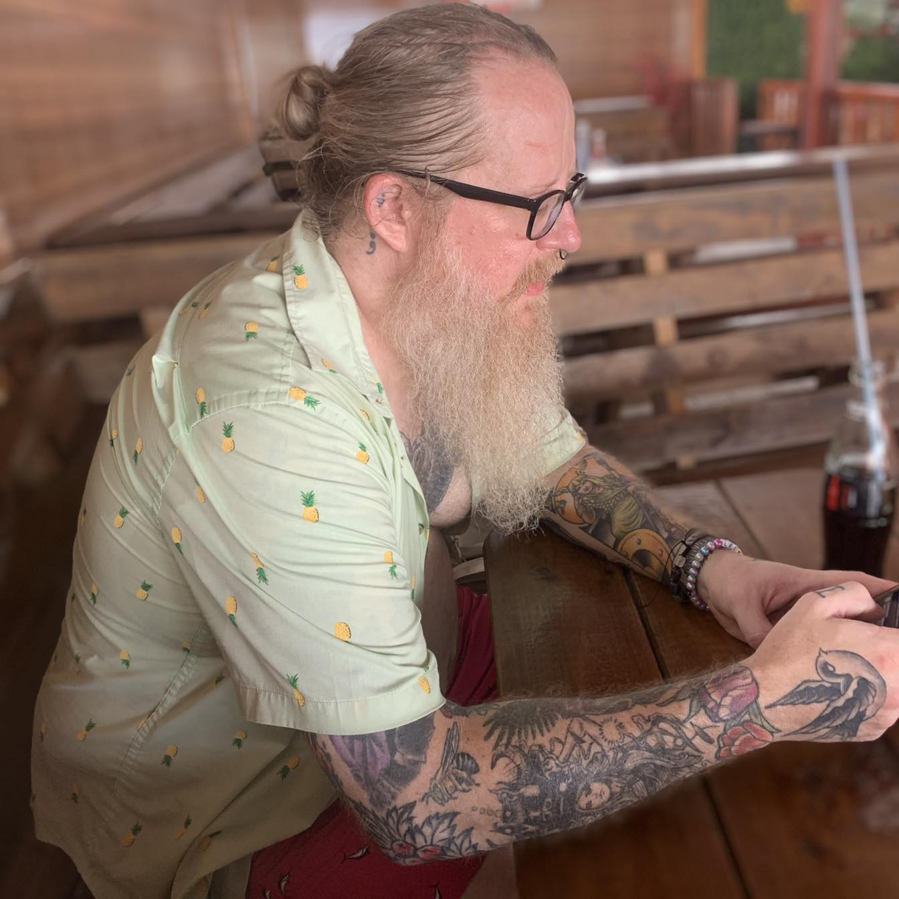
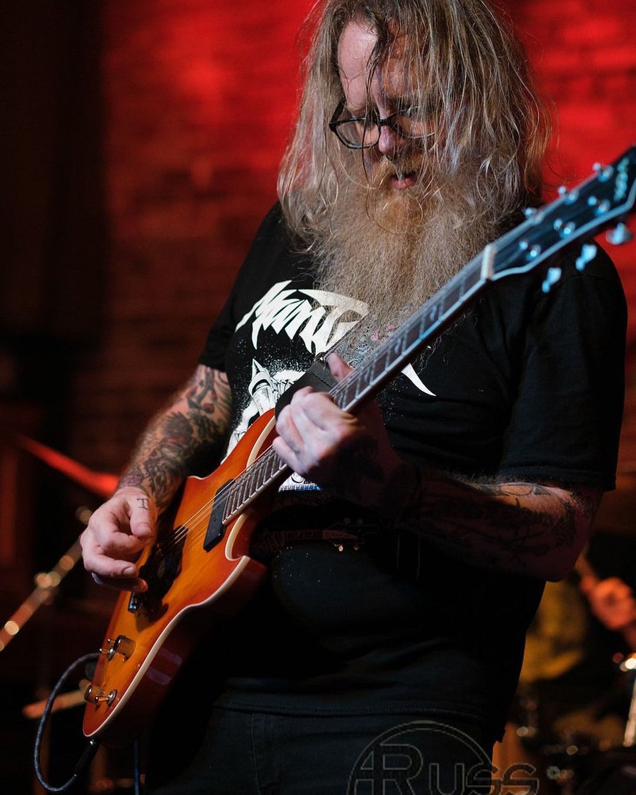

Mathematician · Researcher · Musician

About
Biography
Christopher Lee-Jenkins is a Washington State-based mathematician whose work is unified by a single persistent question: what happens to our picture of the world when we take the observer seriously as part of the mathematics? Originally from Wyoming, his path has taken him across the country as a student, teacher, and researcher; and the through-line connecting all of it has been a fascination with the hidden geometric structures underlying apparently unrelated phenomena. He earned his PhD in mathematics in 2009, with a dissertation on folded symplectic toric four-manifolds, a generalization of Hamiltonian dynamics in four dimensions, and has been extending and applying that geometric instinct ever since.
His research sits at the intersection of differential topology, information geometry, and dynamical systems. He is particularly drawn to the interplay between smooth and discrete dynamics; investigating equilibria through the lens of Morse theory, graph theory, and chain complexes. This work has crystallized into a program he calls Observational Geometry: a framework that treats the act of observation itself as having geometric structure, and asks what constraints that structure places on what any observer can measure or know. The framework connects evolutionary dynamics, projective geometry, symplectic and contact structures, and the foundations of probability into a coherent whole.
The reach of these ideas has surprised even him. The same mathematics that describes competing populations in biology turns out to illuminate quantum measurement; the geometry of how an observer moves through a space of possibilities connects to black hole thermodynamics and the nature of time. He brings the same instinct for conceptual structure to his teaching at Centralia College, where he approaches statistics not as a collection of procedures to memorize but as a living geometry of inference: a discipline with a shape, and a shape worth understanding.
Running alongside the technical research is a longstanding interest in the genuinely strange. Christopher grew up with experiences that resisted easy explanation, and that early encounter with the limits of the familiar has never entirely left him. He takes seriously the questions that sit at the boundary of the formally tractable; not as an abandonment of rigor, but as an acknowledgment that rigorous mathematics has historically had a way of eventually catching up to things that once seemed merely mysterious.
Beyond mathematics, Christopher is an accomplished musician with a background in audio synthesis and electronic composition. He performs and records with Portland's Kvasir and Wyoming's One Good Eye, and pursues solo work under the name Leviathan Rise. He thinks of teaching, research, and music as expressions of the same underlying impulse: the desire to find the structure inside something that at first appears simply given, and to share what that structure reveals.
Current Projects
The common thread running through all of my current work is a simple but far-reaching question: what does mathematics look like when you take the observer seriously? Most of science is built on the assumption that there is a clean separation between the thing being studied and the person studying it. But at the edges of physics, biology, and statistics, that separation breaks down in interesting ways — the act of measuring something changes what you can know about it, and the geometry of how you look turns out to shape what you see. I am developing a unified mathematical framework, called Observational Geometry, that tries to make this precise, and applying it across a range of fields. The projects below are the main fronts of that work.
This book builds the Observational Geometry framework from the ground up, intended for graduate students in mathematics and mathematical physics. The central idea is that observation is not a passive act — it has geometric structure, and that structure constrains what any observer can measure, predict, or know. The book develops the tools needed to make that idea rigorous, drawing on differential geometry, dynamical systems, and probability theory, and applies them to problems ranging from evolutionary biology to quantum mechanics.
In evolutionary biology, populations competing for resources follow mathematical rules called replicator dynamics. In quantum mechanics, the probability of a measurement outcome follows a rule called the Born rule. These seem like completely unrelated things — but this series of papers argues they are expressions of the same underlying geometry. The research shows that when you look at how any observer-dependent system evolves over time, a common mathematical skeleton emerges, and it connects classical competition, quantum measurement, and the nature of time itself.
Most statistics textbooks teach you how to run a test or build a confidence interval, but not why those procedures have the forms they do. This book approaches statistics from a geometer's point of view: every statistical method is secretly a way of collapsing a complicated space of possibilities down to something manageable, and the shape of that collapse determines what you can and cannot conclude. The goal is to give students with some mathematical background a genuinely deeper understanding of what inference actually is.
Connect
Facebook: ChristopherRaeLee
Instagram: trismegistus_bob
YouTube: Christopher Lee-Jenkins
LinkedIn: Christopher Lee-Jenkins
Gallery


Music
Solo Work
Kvasir
One Good Eye
Leviathan Rise
Demonstrations
The Cosmic Dance of Solitons & Superposition
Explore the mesmerizing world of nonlinear wave interactions, where solitons collide and superpose in a cosmic ballet.
Go to DemonstrationFascinating Patterns of Polynomial Roots
The roots of polynomials are plotted in the complex plane, revealing compelling and beautiful patterns.
Go to DemonstrationFibonacci and Pascal's Triangle Diagonals
Visualizes Pascal's Triangle and explores its diagonal sums, revealing a surprising connection to the Fibonacci sequence.
Go to DemonstrationFloyd's Triangle Diagonals & Combinatorial Sequences
Visualizes Floyd's Triangle and explores its diagonal sums, revealing intriguing number sequences like structured tetragonal anti-prism numbers.
Go to DemonstrationFractal Visualizations
A gallery of Mandelbrot and Julia sets.
Go to DemonstrationFourier Interference Patterns
Explore the Fourier transform of interference patterns with high-resolution visualizations of spectral compositions.
Go to DemonstrationDot Grid Rotator
Interactively rotate a dot grid and observe interference patterns as transformations create dynamic visual effects.
Go to DemonstrationModular Multiplication Visualization
A graphical representation of modular multiplication, revealing hidden structures in number theory through dynamic circular patterns.
Go to DemonstrationNormal Distribution Visualizer
Dynamically adjust mean and standard deviation to see how the normal distribution curve changes in real time.
Go to DemonstrationPaleontology, Plate Tectonics, and Evolution Timeline
An interactive timeline exploring the history of paleontology, the evolution of dinosaurs, and the development of plate tectonics.
Go to Demonstration